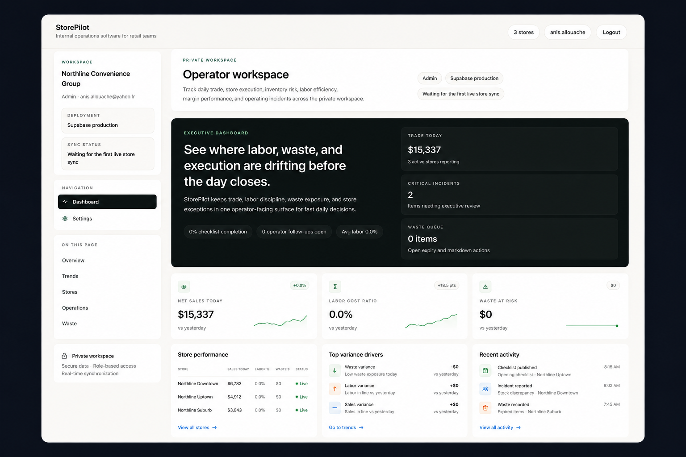

01
Retail Ops / Dashboard
StorePilot — Retail operations dashboard
StorePilot is a retail operations proof system based on real operational needs, using sample data to demonstrate stock, margin and daily sales workflows.
Scope · Product management · Stock visibility · Business dashboard
Stack · React · TypeScript · Supabase · Vercel
